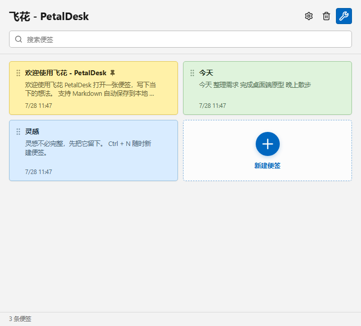
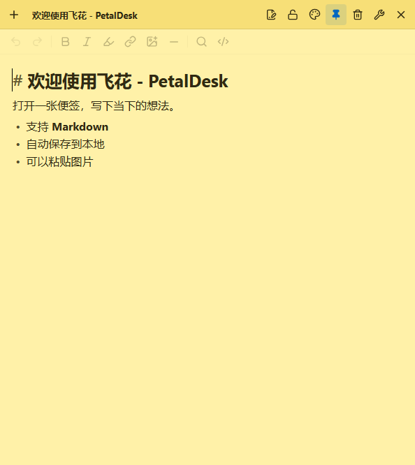
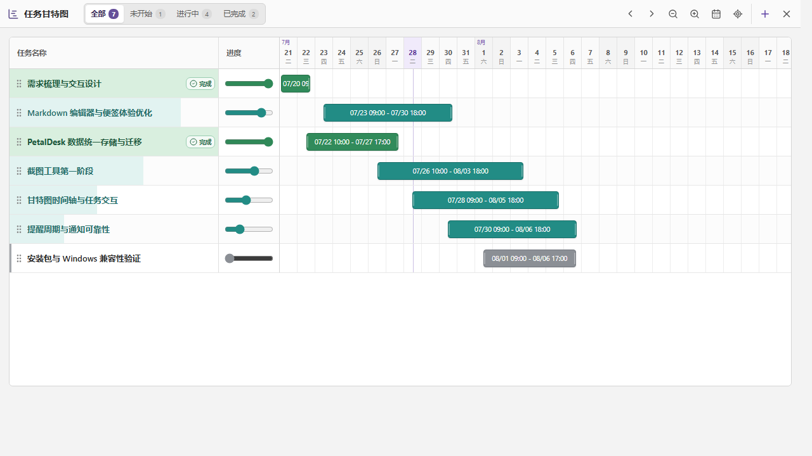
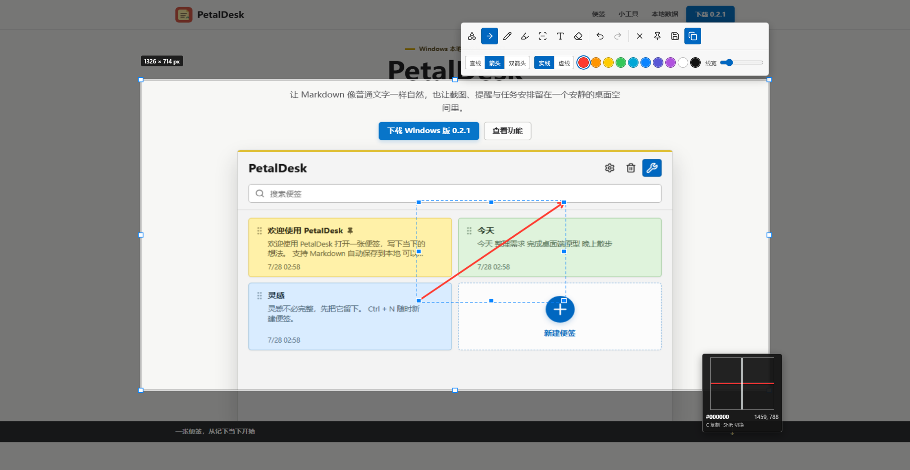

所见即所得
输入 Markdown 即时排版，保留源码切换、快捷格式、高亮、图片与可跳转链接。
Windows 本地便签与效率工具
让 Markdown 像普通文字一样自然，也让截图、提醒与任务安排留在一个安静的桌面空间里。

便签可以独立打开、移动、缩放和置顶。主界面支持拖动手柄手动排列，新建便签追加在末尾，置顶时移到第一位；每一张的颜色、编辑样式与只读状态也都彼此独立。
输入 Markdown 即时排版，保留源码切换、快捷格式、高亮、图片与可跳转链接。
黄色、粉色、蓝色、绿色、紫色、灰色与炭笔色，让不同用途自然形成视觉分区。
移动、缩放或从托盘快速召回；列表顺序可手动调整，双击托盘图标直接打开第一张。
一键隐藏工具栏并锁定正文与标题，查阅资料时不再担心误触修改。
适合结构化记录、清单、代码片段与图片笔记；排版结果直接留在编辑位置。
适合快速摘录与临时草稿；不解析语法，只保留稳定的文字输入、查找和撤回重做。

格式、链接、图片、分隔线、查找与源码切换集中在一条轻量工具栏里，编辑和阅读不必来回切换窗口。
从托盘或便签窗口随时打开。计时、提醒、任务规划、截图和长截图各自专注，不把主界面变成拥挤的控制台。
透明电子数字、暂停与重置记录，位置、大小和透明度都能记住。
支持一次、间隔以及日、周、月、年周期，到点发送 Windows 通知。
拖动排序、进度筛选与时间轴缩放，从小时细节看到长期安排。
框选后直接标注、复制、保存或贴图；长截图保留选区遮罩，在原窗口中滚动并稳定拼接。


飞花 - PetalDesk 把便签、附件、设置和小工具数据统一放进“飞花 - PetalDesk 数据存储”。换电脑时复制整个目录，再指定它即可继续使用。
每张便签以 note.md 保存，图片放在对应 assets 目录，不依赖专有数据库才能读取。
复制完整的飞花 - PetalDesk 数据存储目录，在新电脑安装时或设置中选择该路径。
临时文件、日志、备份与回收站共同保护内容，搜索索引可以从 Markdown 重新构建。
PetalDesk/ └─ .petaldesk/ ├─ notes/ │ └─ <note-id>/ │ ├─ note.md │ ├─ meta.json │ └─ assets/ ├─ tools/ ├─ state/ │ ├─ note-order.json │ └─ windows.json ├─ backups/ ├─ journal/ ├─ trash/ └─ conflicts/
`%LOCALAPPDATA%\PetalDesk` 只保存当前数据目录指针、可重建索引和调试日志，不属于需要迁移的业务内容。
安装器会先检查 WebView2；缺少时从微软官方地址联网下载，显示进度并静默安装，完成后再继续安装飞花 - PetalDesk。